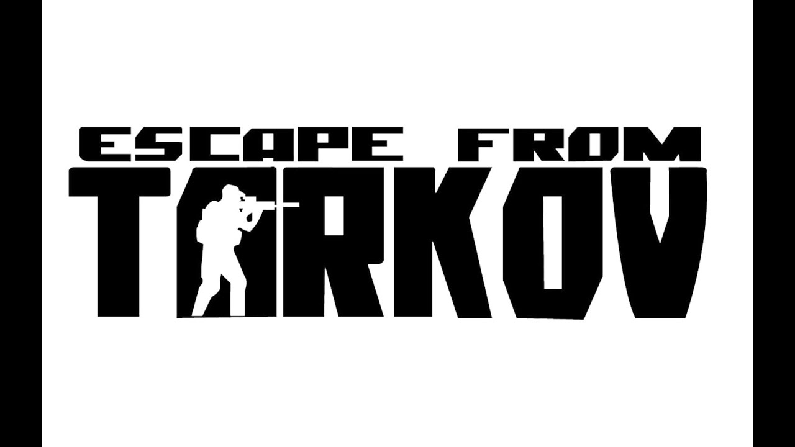
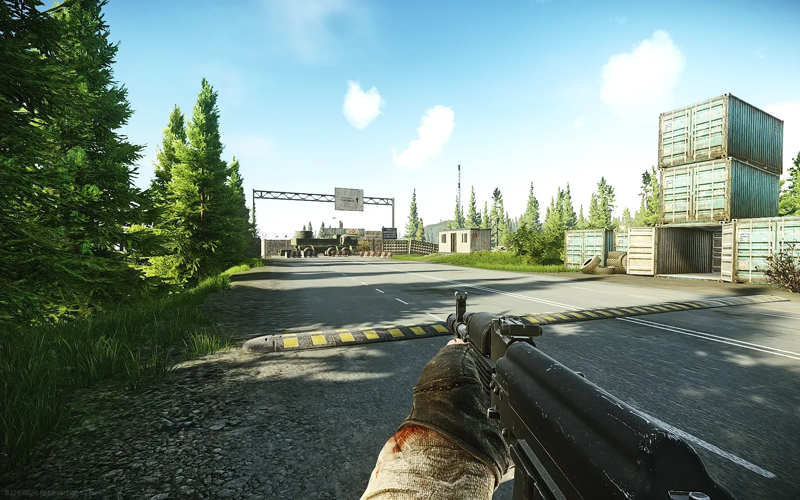
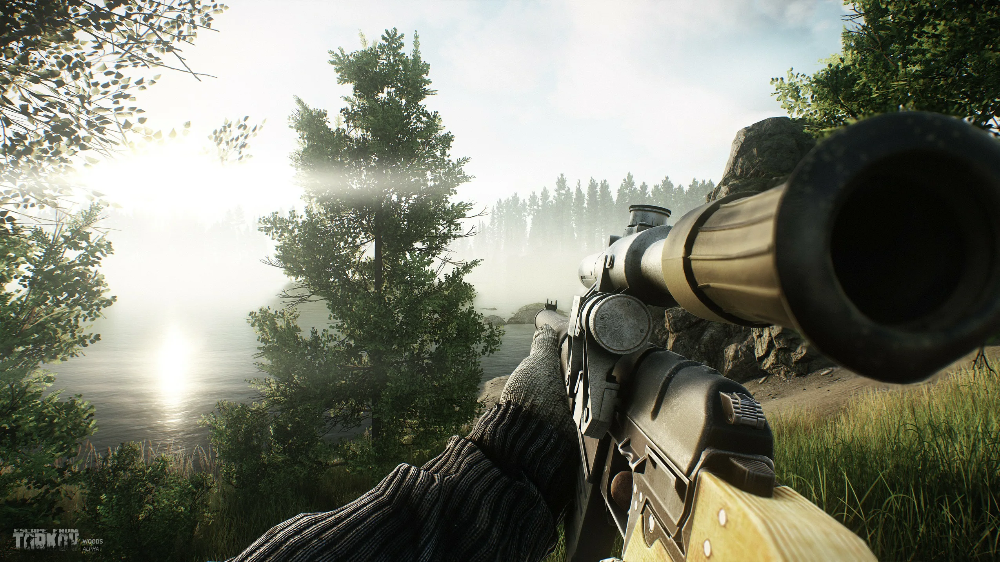

Escape from Tarkov представляет собой онлайновый шутер от первого лица. Она совмещает в себе элементы некоторых других жанров — RPG и MMO — и использует «полуоткрытый мир», локации ограниченных, но больших размеров. Игроки берут на себя роль вооружённых наёмников одной из двух частных военных компаний — USEC или BEAR. Выбор группировки мало влияет на геймплей — немного меняются задания и экипировка в начале игры; от группировки также зависит кастомизация одежды персонажа и набор фраз: у USEC реплики на английском, а у BEAR — на русском. В ходе игры управляемый игроком персонаж отправляется из безопасного убежища в вылазки — «рейды» — по окрестностям Таркова; он должен добывать ценные вещи и припасы и может также выполнять задания торговцев — например, найти определённый предмет или убить определённое количество врагов. Каждый рейд представляет собой большую карту со множеством точек интереса; на ней игрок может пробыть не более половины игровых суток или 25-50 минут реального времени, в зависимости от локации. В ходе рейда игрок должен следить за здоровьем персонажа, находить еду и питьё, лечить и перевязывать раны. Если персонаж погибнет по любой причине — будет застрелен, истечёт кровью, отравлен, истощён или просто не покинет карту до истечения разрешённого времени — все его снаряжение будет потеряно, если оно не было застраховано у Торговца.

События игры разворачиваются во вселенной «Россия 2028» (англ. Russia 2028), созданной в 2009 году и ранее использованной в игре Contract Wars. Место действия — вымышленный российский город Тарков в Норвинской области, Северо-Западном федеральном округе, в прошлом зоне экономического сотрудничества России и Европейского союза. На момент игры город и его окрестности изолированы от внешнего мира миротворческими силами ООН и ВС России после политического кризиса, вызванного незаконной деятельностью транснациональной корпорации TerraGroup. В городе идёт вооружённый конфликт между двумя частными военными компаниями: USEC защищает интересы корпорации, BEAR — формально нанятая властями Норвинской области, по слухам, созданная Правительством России. Игрок берёт роль бывшего наёмника, которому предстоит найти выход из осаждённого Таркова, чтобы выжить[9][10][11]. Тарков — вымышленный город на северо-западе европейской части России, муниципальное образование в составе Норвинской области. В основу названия города положен гидроним Тарка по названию реки (длина 38 км, впадает в Финский залив), устье которой располагается на востоке города. Город находится на правом берегу Финского залива, относящегося к Балтийскому морю, на юге Карельского перешейка. Население Таркова — 949,3 тысячи человек (2008).